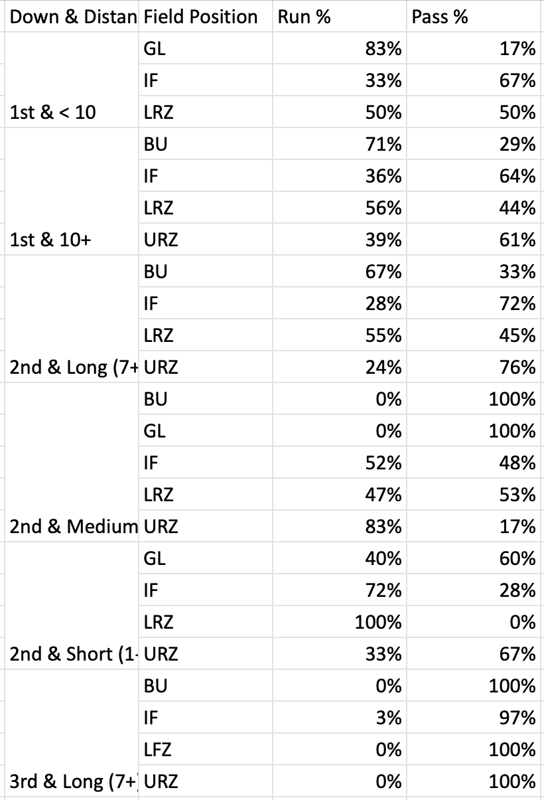
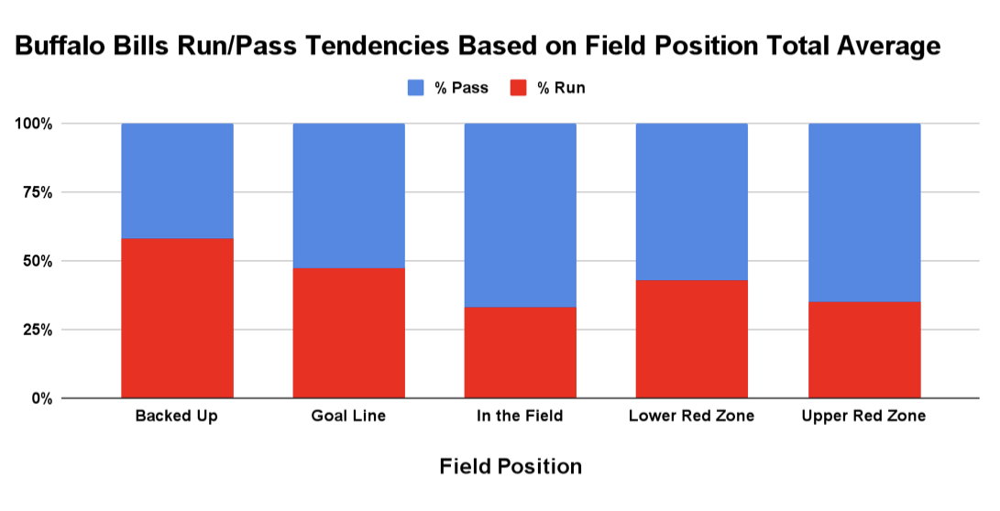
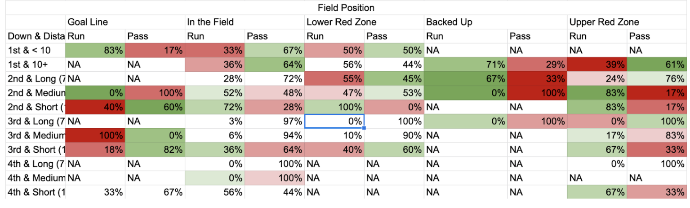

Excel Analytics Project
In this project I worked on going through different datasets that I was given from my Internship and importing into excel then going through the data to compare the individual teams statistics to league average.
Dataset

This is just a snippet from the Bills tendencies dataset that I imported into Excel. I combined all
the teams tendencies into separate spreadsheets and the league averages into another where I would then use
conditional formatting to visually show the teams percent tendencies versus the rest of the league.
Visualizations

Here's a screenshot of the Bills Run/Pass Tendencies based on the field position. The 5 different field positions are backed up
inside their 5 yard line, the Goal Line, In the Field, Lower Red Zone, & the Upper Red Zone.

Down here in the table this is where the conditonal formatting comes into play where the individual tendenceies are compared to
the League Averages. This is a Pivot Table that is taking into acccount the Down & Distance situation combined with the Field Position.
If the tendency is above the league average then it's going to be highlighted green, the darker the shade of green the farther it is from
league average. This is the same vice versa with the red formatting. There are some null values from the dataset but theres enough information
to derive conclusions from the data.
Conclusions
In the first visualization we can conclude that Buffalo favors to pass the ball versus running the ball excpet for when they are backed up to their own goalline. This is also shown in the table in the Backed Up section where the cells are more dark red showing when the Bills are backed up they like to run the ball a little bit more than league average to get some more room. Once their more in the field they like to throw the ball more where you can see despite short yardage situations they still like to put the ball in the air more. The passing percents usually exceed 50% in most situations.
Full Report
You can see the full report me and my group wrote up here: Bills vs Rams Tendencies